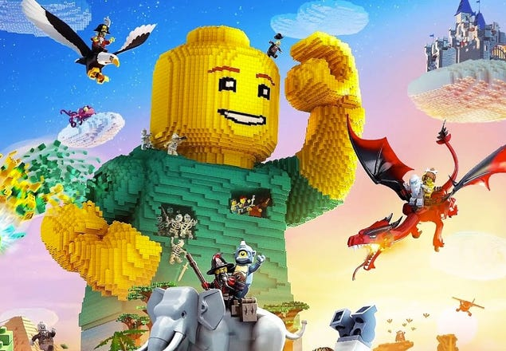
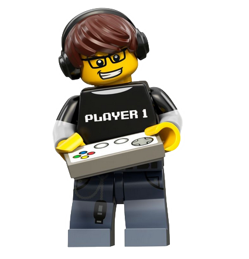

LEGO Speles
 Kops 1995. gada ir izlaistas 85 komercialas videospeles, kuru pamata ir The Lego Group razota buvnieciba sistema, Pec otras speles Lego Island, ko izstradaja un publiceja Mindscape, Lego Group publiceja speles pati ar savu Lego Media nodalu, kas 2001. gada, tika pardeveta par Lego Software un 2002. gada Lego Interactive. Projekti tika izstradati ari kopa ar Electronic Arts. Bijusais Lego Interactive personals nodibinaja uznemumu Giant Interactive Entertainment nakotnes Lego spelu publicesanai. Pec Lego Star Wars: Video Game izlaisanas Giant apvienojas ar Traveller's Tales, Izveidojot TT Games. TT Games 2006. gada novembtri iegadajas Warner Bros. Interactive Entertainment (WBIE), padarot WBIE par galveno Lego spelu izdeveju.Iepazisties ar jaunakajam LEGO videospelem prieks PC, PlayStation , Xbox, Nintendo Switch un citam platformam. Iepazisties un izmegini jautras mobilo iericu lietotnes, kuras darbinams uz viedtalruniem un plansetdatoriem.
